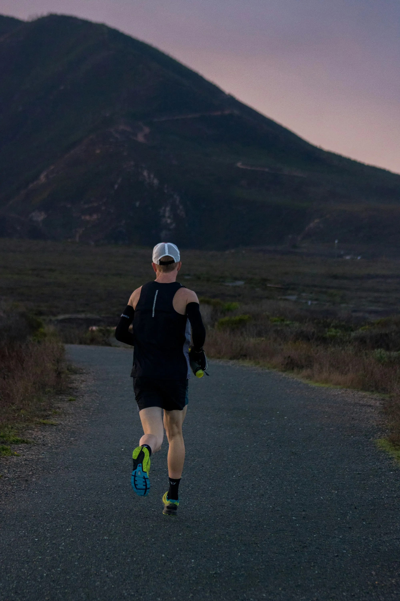

- Fit comes first: about a thumb's width in front of your toes, a snug heel, and no tight spots.
- Match the shoe to the surface you run on most, and try several in a shop that lets you walk and jog.
- Experts commonly advise replacing running shoes every 300 to 500 miles (about 480 to 800 km), sooner if they feel flat or you get new aches.
Choose a running shoe that fits your foot first, matches the surface you run on most, and feels comfortable when you jog in it. Replace it when it goes flat or when you have covered somewhere between 300 and 500 miles, which is about 480 to 800 km.
Start with fit
No feature matters as much as fit. The usual checks:
- Toe room. There should be about a thumb's width between your big toe and the end of the shoe. Running spreads and flattens the foot, so running shoes may be slightly bigger than your everyday shoes. Do not go so big that the shoe adds weight and slops about. For a snugger fit your toes can touch the end, but they should not curl.
- Heel. With your foot flat and your knee slightly bent, about one to one and a half fingers should fit behind your heel, and it should not slip when you jog.
- Overall feel. Too tight can cause sore feet. Too loose feels unstable. You want even pressure and no hot spots.
- Both feet. Feet are often slightly different sizes. Fit to the larger one.
- Walk and jog. Try shoes on with the socks you run in, and jog a few steps in the shop. Many people try shoes after a run or at the end of the day, when feet feel warmer and fuller.
If a shop can measure your feet, take the offer, because foot size can change over time.

Cushioning or firm?
This is mostly personal preference, and there is no single right answer. Softer shoes feel plusher, especially on hard roads and for longer runs. Firmer shoes feel more direct and are often lighter. Rather than follow a rule, try two or three kinds on a jog and pick the one that feels comfortable for the distance you run. If you are new to running, comfort matters more than anything else on the box. A shoe that is comfortable on day one is more likely to get you out of the door on day thirty.
Road shoes or trail shoes?
Match the shoe to the run. Road shoes suit parks with paved paths, tracks, roads and treadmills. Trail shoes are made for rough, loose or muddy ground and have a deeper grip. Most Indian city runners need road shoes. If you also run on trails, in hill stations or on the way to a trek, see our easy treks and trekking shoes and poles for walking footwear. Indian roads often mix tar, broken footpaths, paving stones and gravel, so look for a shoe with a stable heel and enough grip for slippery or uneven surfaces.

Signs your shoes are worn out
- Lost bounce. The midsole feels hard or flat, and your stride feels heavier.
- New aches. Your feet hurt after just a few miles, or your hips or knees get sore.
- Uneven soles. The tread wears down on one side, or the shoe leans when you set it on a flat surface.
- Damaged upper. The fabric shows tears, scrapes or holes.
The cushioning can wear out before the outside looks worn, so do not rely on looks alone. If pain persists, see a doctor or physiotherapist; see also beginner running injuries.
When to replace running shoes
A common guideline is to replace running shoes every 300 to 500 miles (roughly 480 to 800 km), though it is not a fixed rule. A 2011 review of 18 years of research, published in the journal Footwear Science, suggests that high-quality running shoes can last for more than 600 miles. So the number is a starting point, and how the shoe feels is the real test. If you run about 15 km a week, 500 km is around eight months of running. Write the date you bought the shoes inside the tongue, or log the distance in an app.
Monsoon and heat
- Wet shoes. If you run in the rain, let your shoes dry slowly in a ventilated place, away from direct heat, and stuff them with paper if they are soaked. Rotating two pairs helps when one is still wet.
- Grip and puddles. Wet tar, tiles and painted road markings are slippery, so slow down. Do not step into puddles that may hide potholes or open drains.
- Heat. Choose breathable shoes and light socks. Heat itself is a bigger risk than shoes; see running in Indian heat and monsoon. Doctors quoted by Runner's World recommend light, breathable clothing, running in the cooler hours and taking heat warning signs seriously.
- Blisters. If you get blisters, look at fit and socks before you blame the shoe.
A simple buying plan
- Decide your main surface, and your usual distance.
- Visit a shop with your running socks, ideally after a run or late in the day.
- Try three pairs, jog in each, and pick the most comfortable.
- Run in them for a few short runs before a long run or race.
- Note the date, and replace them when they feel flat or reach the mileage range.
We do not rank brands or take affiliate money, so we cannot tell you which one is best; the best shoe is the one that fits you. If you are just starting, our 5K plan is a good place to begin.
General information, not medical advice. If you have foot pain, flat feet or a past injury, talk to a doctor or physiotherapist.
Sources
- Nike: How many miles are running shoes good for? (replacement range, 2011 Footwear Science review, signs of wear)
- Nike: How should running shoes fit? (fit checks)
- Runner's World South Africa: running in the heat
Quick questions
How do I know my running shoe size?
Try shoes on with your running socks, and walk and jog in them. You should have about a thumb's width between your big toe and the end of the shoe, and no tight spots. Running shoes may be a little bigger than your everyday size.
How often should I replace running shoes?
A common guide is every 300 to 500 miles, which is roughly 480 to 800 km. A 2011 review of research suggests high-quality shoes can last more than 600 miles, so also go by how they feel.
Can I run in the same shoes I walk in?
For a few short sessions, perhaps, but running shoes are designed for the impact and motion of running. If you plan to run regularly, buy a pair that fits you.
Do I need trail shoes in India?
Only if you run regularly on rough, muddy or rocky ground. For parks, tracks and roads, road shoes are the usual choice.